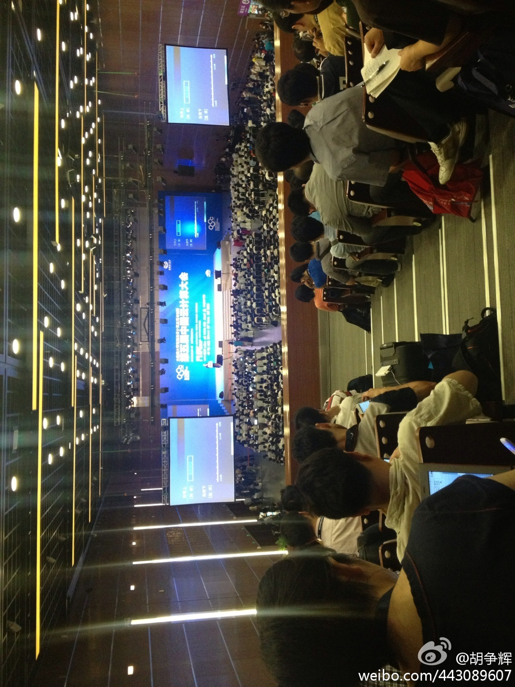

CTO圆桌在云计算CSDN展台处，与讲师面对面交流，机会难得。//@CSDN:@CTO俱乐部:#云计算大会#CTO俱乐部将给到场会员提供与讲师面对面交流的机会，邀请到本次大会讲师、也是CTO俱乐部会员的五位嘉宾@程辉 @快盘-杨钢 @颜阳-老兔空间 @土人谭晓生 @林彦廷-微吼 ，他们将分别做客圆桌一小时，欢迎到场的CTO俱乐部会员提前预约参加。@CSDN @Ada李力 @CSDN云计算 网页链接
场面壮观。@胡争辉:@刘江总编 这个角度能拍到#云计算大会#的全景。因为来晚了，只好坐最后一排了，这边没有你们的摄影师，我就拍一张留念吧。@CSDN @蒋涛CSDN@曾登高 @CSDN闫辉 @CSDN武力 @CSDN付江 @付菁2011SS 我在这里:北京·国家会议中心 
回复@骆逸:看展台不用门票 //@骆逸:想去看看厂商 //@Ada李力:下雨天还有这么多人，真不容易。@张侠:中国第五届云计算大会今起三天在国家会议中心举行。大会有三天的主会场演讲，还设云大数据，云数据中心，云园区建设，智能城市等专题论坛。会场和展区均人头攒动。
某同学做博士期间，曾冥思苦想，加班熬夜几个月写了八页的文章，申请到二万的科研经费，高兴坏了。后来导师临时给个任务，让他连夜赶出个文档，第二天交出去，就能拿到200万的项目资金。- 我猜这是同学后来坚决不继续做科研的原因之一。
对于同学晚熟，在校期间没做过太疯狂出格的事情，听过几种解释：入学年龄偏小；那时还在用粮票，男生都吃不饱饭，没精力折腾别的，饱才能思淫逸；新生没和老生住在一起，缺少可效仿的对象；是六四后第一届新生，教育部门管得严格了些。
因为工作关系，对当年大学五个班级氛围的形成机理很感兴趣，我们那个专业班气氛明显活跃些，原因是：要有几个热心张罗事情的人；还有就是体验好的集体活动，印象中，当年班级显示出凝聚力的标志是在大二一次集体聚餐后。
我大学当年算是班里的怪人，跟谁都不太往来，因为学校和专业都不是我选的，心情一直不好。现在和同学聊起聊起才知，当年那些不合群的同学都有类似遭遇，在一个缺乏自己内心认同的集体中生活四年，确实是个很糟糕的经历。
我也曾做过招生，那时很不理解有些学校坚决不要没有报考自己院校的学生，即使分数再高。多年后，我才认为这种做法很对。当年我那个专业招了很多调配来的学生，特点是高考分数高，自视甚高，结果就是很难融入那个不是自己选择的集体。
//@八爪李炯明:你说得没错，传统软件开发者要么低头拉车，要么执行苦逼的命令~~~~基本属于搞掂任务型！ 互联网开发工程师就需要更强的用户角度思考问题。。。@Ada李力:互联网的技术工程师，比传统行业的软件工程师更受推崇，我认为原因在于：互联网的工程师离终端用户更近。
回复@Zinser_Zhao:校园是另一种形式的象牙塔。 //@Zinser_Zhao:看不懂逻辑啊?@Ada李力:当年上大学时，同学普遍年龄小，因此晚熟，表现就是大部分时间都还是在读书，白天上课抢座位，晚上自习抢座位，到大四了还是如此。- 这也是现在很多同学在当老师的缘故吧。
回复@吴朱华:这确实是个很奇怪的现象，当年班上挂科多的同学，现在都很不错。 //@吴朱华:我能理解，但我原因不同，是挂课实在太多@Ada李力:我大学当年算是班里的怪人，跟谁都不太往来，因为学校和专业都不是我选的，心情一直不好。现在和同学聊起聊起才知，当年那些不合群的同学都有类似遭遇，在一个缺乏自己内心认同的集体中生活四年，确实是个很糟糕的经历。
我和一同学差别很大。她大学四年陆续喜欢过三个人，而且都表白过，无结果；我那时朦朦胧胧喜欢某人，但坚决不让别人知道，也无结果。现在面临同学会，她很懊悔当年的表白，觉得那时太傻，我却希望当年能有她一样的勇气。- 这也是一种围城效应。
我那同学应该很适合做销售。//@程时旭:我现在天天向客户表白，从没后悔过@Ada李力:我和一同学差别很大。她大学四年陆续喜欢过三个人，而且都表白过，无结果；我那时朦朦胧胧喜欢某人，但坚决不让别人知道，也无结果。现在面临同学会，她很懊悔当年的表白，觉得那时太傻，我却希望当年能有她一样的勇气。- 这也是一种围城效应。
介总结好。//@Julia_jieliu:介不就是“表白了一生后悔”和“没表白后悔一生”的真实案例吗？@Ada李力:我和一同学差别很大。她大学四年陆续喜欢过三个人，而且都表白过，无结果；我那时朦朦胧胧喜欢某人，但坚决不让别人知道，也无结果。现在面临同学会，她很懊悔当年的表白，觉得那时太傻，我却希望当年能有她一样的勇气。- 这也是一种围城效应。
刘老师说这番话时，在场另一位女同事说最好不要提过去的暗恋，不然见面也是尴尬。@Ada李力:@刘江总编 说他小学，初中，高中都有暗恋对象。小学暗恋对象是个老师。他现在有个心愿，就是找到这些人，当面告诉对方自己当年的暗恋。刘老师真是性情中人。
刘老师威武。//@刘江总编:我只是不装，说出人之常情而已。其实这个心愿真要付诸实施，我还是很心虚的，万一其中哪位说我那时也恋你啊，我该咋办？@Ada李力:@刘江总编 说他小学，初中，高中都有暗恋对象。小学暗恋对象是个老师。他现在有个心愿，就是找到这些人，当面告诉对方自己当年的暗恋。刘老师真是性情中人。
面对面的交流最高效。@CTO俱乐部:#云计算大会#第二天现场，欢迎CTO俱乐部会员提前短信预约与大会讲师面对面交流，上午10-11点OpenStack基金会董事@程辉，下午2-3点金山云CTO@快盘-杨钢，3-4点民生证券技术总监@颜阳-老兔空间，发送讲师姓名+您所在公司名称+职位+姓名至18618138084 @CSDN @CSDN云计算 @Ada李力 网页链接